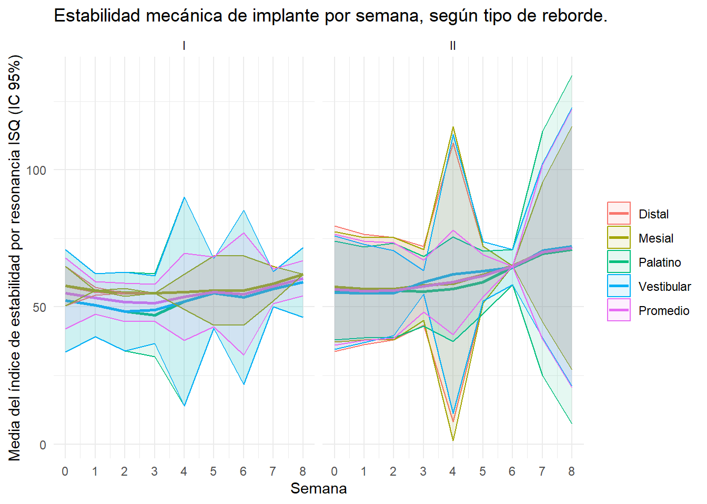
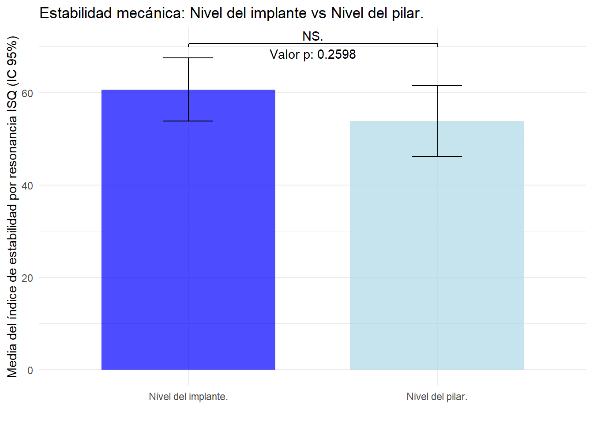

tabla1 <- data_wide %>%pivot_longer(cols =c(Mesial, Distal, Vestibular, Palatino, Promedio), names_to ="Medicion", values_to ="valor") %>%group_by(Semana, Medicion) %>%summarise(n =sum(!is.na(valor)),media =mean(valor, na.rm =TRUE),sd =sd(valor, na.rm =TRUE),ci_inf =mean(valor, na.rm =TRUE) -qt(0.975, df =sum(!is.na(valor))-1) *sd(valor, na.rm =TRUE) /sqrt(sum(!is.na(valor))),ci_sup =mean(valor, na.rm =TRUE) +qt(0.975, df =sum(!is.na(valor))-1) *sd(valor, na.rm =TRUE) /sqrt(sum(!is.na(valor))),mediana =median(valor, na.rm =TRUE),minimo =min(valor, na.rm =TRUE),maximo =max(valor, na.rm =TRUE),.groups ="drop" )tabla2 <- data_wide %>%pivot_longer(cols =c(Mesial, Distal, Vestibular, Palatino, Promedio), names_to ="Medicion", values_to ="valor") %>%group_by(Semana, Medicion, `tipo reborde`) %>%summarise(n =sum(!is.na(valor)),media =mean(valor, na.rm =TRUE),sd =sd(valor, na.rm =TRUE),ci_inf =mean(valor, na.rm =TRUE) -qt(0.975, df =sum(!is.na(valor))-1) *sd(valor, na.rm =TRUE) /sqrt(sum(!is.na(valor))),ci_sup =mean(valor, na.rm =TRUE) +qt(0.975, df =sum(!is.na(valor))-1) *sd(valor, na.rm =TRUE) /sqrt(sum(!is.na(valor))),mediana =median(valor, na.rm =TRUE),minimo =min(valor, na.rm =TRUE),maximo =max(valor, na.rm =TRUE),.groups ="drop" )# Ajusta el orden de los factores de la columna Medicion para que Promedio sea el últimotabla1$Medicion <-factor(tabla1$Medicion, levels =c(unique(tabla1$Medicion[tabla1$Medicion !="Promedio"]), "Promedio"))tabla2$Medicion <-factor(tabla2$Medicion, levels =c(unique(tabla2$Medicion[tabla2$Medicion !="Promedio"]), "Promedio"))tabla1$Semana <-as.numeric(tabla1$Semana)tabla2$Semana <-as.numeric(tabla2$Semana)df_long <- data %>%pivot_longer(cols =starts_with("Semana"), names_to ="Semana", values_to ="Valor")# Calcular promedio por paciente y semanadf_promedio <- df_long %>%group_by(Paciente, Semana) %>%summarise(Promedio =mean(Valor, na.rm =TRUE), .groups ="drop")# Preparar df_promedio para unirlo de nuevo, manteniendo los datos originalesdf_promedio_expanded <- data %>%select(Paciente, Sexo, `tipo reborde`, `Torque inicial`, `Directo al implante`) %>%distinct() %>%left_join(df_promedio, by ="Paciente") %>%mutate(`Cara del implante`="Promedio") %>%pivot_wider(names_from = Semana, values_from = Promedio, names_prefix ="")# Unir los promedios al dataframe original, evitando duplicadosdata_2 <-bind_rows(data, df_promedio_expanded) %>%mutate(across(everything(), ~ifelse(is.nan(.), NA, .)))data_2$`Cara del implante`<-factor(data_2$`Cara del implante`, levels =c(unique(data_2$`Cara del implante`[data_2$`Cara del implante`!="Promedio"]), "Promedio"))# Preparando el dataframe para el testdata_long_2 <- data_2 %>%pivot_longer(cols =starts_with("Semana"),names_to ="Semana",values_to ="Valor",names_prefix ="Semana ") %>%mutate(Semana =as.numeric(Semana))# Preparar un dataframe para almacenar los resultadostabla3 <-tibble()# Iterar sobre cada 'Cara del implante'for (cara inunique(data_long_2$`Cara del implante`)) {# Filtrar los datos por 'Cara del implante'df_filtrado <- data_long_2 %>%filter(`Cara del implante`== cara)# Comparar la semana 0 con cada una de las otras semanasfor (i in1:8) { # Asumiendo que tienes datos hasta la semana 8 # Comprobar si la semana existemedia_semana_0 <- df_filtrado %>%filter(Semana ==0) %>%summarise(Media =mean(Valor, na.rm =TRUE)) %>%pull(Media)media_semana_i <- df_filtrado %>%filter(Semana == i) %>%summarise(Media =mean(Valor, na.rm =TRUE)) %>%pull(Media)# Calcular la diferencia entre las mediasdiferencia_medias <- media_semana_i - media_semana_0# Realizar el test de Wilcoxon para muestras pareadastest <-wilcox.test( df_filtrado %>%filter(Semana ==0) %>%pull(Valor), df_filtrado %>%filter(Semana == i) %>%pull(Valor),paired =TRUE, exact =FALSE)# Guardar los resultadostabla3 <-bind_rows(tabla3, tibble(Cara_del_implante = cara,Comparacion =paste("Semana 0 vs", i),Diferencia_Medias = diferencia_medias,P.valor = test$p.value))}}# Realizar el test de Wilcoxon para cada combinación de Semana y Cara del implantetabla4<- data_long_2 %>%group_by(Semana, `Cara del implante`) %>%summarise(`Tipo reborde 1 (Media)`=mean(Valor[`tipo reborde`=="I"], na.rm =TRUE),`Tipo reborde 2 (Media)`=mean(Valor[`tipo reborde`=="II"], na.rm =TRUE),`Valor p (Wilcox test)`=wilcox.test(Valor[`tipo reborde`=="I"], Valor[`tipo reborde`=="II"], exact =FALSE, paired =FALSE)$p.value,.groups ='drop' )# Filtrar datos para la cara vestibular en la semana 0 y para "Directo al implante"vestibular_semana_0 <- data_2 %>%filter(`Cara del implante`=="Vestibular", !is.na(`Semana 0`)) %>%pull(`Semana 0`)directo_al_implante <- data_2 %>%filter(`Cara del implante`=="Vestibular", !is.na(`Directo al implante`)) %>%pull(`Directo al implante`)# Realizar el test no paramétrico (Wilcoxon, ya que las muestras son independientes)test_result <-wilcox.test(vestibular_semana_0, directo_al_implante)
Warning in wilcox.test.default(vestibular_semana_0, directo_al_implante):
cannot compute exact p-value with ties
# Calcular medias y intervalos de confianza para ambos gruposmedia_vestibular <-mean(vestibular_semana_0, na.rm =TRUE)media_directo_al_implante <-mean(directo_al_implante, na.rm =TRUE)# Usar t.test para calcular intervalos de confianza debido a la distribución t de Studentic_vestibular <-t.test(vestibular_semana_0)$conf.intic_directo_al_implante <-t.test(directo_al_implante)$conf.int# Preparar datos para el gráficodatos_grafico <-data.frame(Grupo =c("Nivel del pilar.", "Nivel del implante."),Media =c(media_vestibular, media_directo_al_implante),IC_inferior =c(ic_vestibular[1], ic_directo_al_implante[1]),IC_superior =c(ic_vestibular[2], ic_directo_al_implante[2]))# Filtrar para obtener solo los datos de "Promedio" en la semana 0df_promedio_semana_0 <- data_2 %>%filter(`Cara del implante`=="Promedio", !is.na(`Semana 0`))
Metodologia.
Resultados
Objetivo General:
Investigar la estabilidad mecánica de implantes dentales con superficie de nanopartículas de hidroxiapatita durante un período de 8 semanas, utilizando el análisis de frecuencia de resonancia con Ostell™.
# gráfico 1ggplot(tabla1, aes(x = Semana, y = media, group = Medicion, color = Medicion)) +geom_line(size =1) +geom_ribbon(aes(ymin = ci_inf, ymax = ci_sup, fill = Medicion), alpha =0.1) +theme_minimal() +labs(title ="Estabilidad mecánica de implante por semana.",x ="Semana",y ="Media del índice de estabilidad por resonancia ISQ (IC 95%)",color ="Medición",fill ="Medición") +scale_x_continuous(breaks =unique(tabla1$Semana)) +theme(legend.title =element_blank())
Warning: Using `size` aesthetic for lines was deprecated in ggplot2 3.4.0.
ℹ Please use `linewidth` instead.
1. Determinar si hay una relación entre la calidad del hueso, medida a través de la tomografía computarizada de haz cónico (CBCT), y la estabilidad mecánica del implante.
# gráfico 2ggplot(tabla2, aes(x = Semana, y = media, group = Medicion, color = Medicion)) +geom_line(size =1) +geom_ribbon(aes(ymin = ci_inf, ymax = ci_sup, fill = Medicion), alpha =0.1) +theme_minimal() +labs(title ="Estabilidad mecánica de implante por semana, según tipo de reborde.",x ="Semana",y ="Media del índice de estabilidad por resonancia ISQ (IC 95%)",color ="Medición",fill ="Medición") +scale_x_continuous(breaks =unique(tabla1$Semana)) +facet_wrap(~`tipo reborde`) +theme(legend.title =element_blank())

2. Comparar la estabilidad mecánica inmediatamente después de la instalación del implante, medida con Ostell™, a nivel del implante y a nivel del pilar.
# Crear el gráficoggplot(datos_grafico, aes(x = Grupo, y = Media, fill = Grupo)) +geom_bar(stat ="identity", position =position_dodge(), width =0.7, alpha=0.7) +geom_errorbar(aes(ymin = IC_inferior, ymax = IC_superior), width =0.2) +labs(title ="Estabilidad mecánica: Nivel del implante vs Nivel del pilar.",y ="Media del índice de estabilidad por resonancia ISQ (IC 95%)", x ="") +scale_fill_manual(values =c("blue","lightblue"))+annotate("text", x =1.5, y =max(datos_grafico$IC_superior, na.rm =TRUE) +1, label =paste("Valor p:", round(test_result$p.value, 4))) +theme_minimal() +geom_signif(comparisons =list(c("Nivel del pilar.", "Nivel del implante.")),map_signif_level =TRUE,y_position =max(datos_grafico$IC_superior, na.rm =TRUE) +2,text_format =paste("p =", formatC(test_result$p.value, format ="e", digits =2)),vjust =0) +theme(legend.position ="none")
Warning in geom_signif(comparisons = list(c("Nivel del pilar.", "Nivel del
implante.")), : Ignoring unknown parameters: `text_format`

3. Evaluar si existe una correlación entre el torque de inserción final y la estabilidad mecánica medida con el índice de estabilidad por resonancia (ISQ) en el implante y en el pilar en el momento T0.
# Utilizar ggscatter para crear el gráfico de correlaciónggscatter(df_promedio_semana_0, x ="Torque inicial", y ="Semana 0", add ="reg.line", # Añadir línea de regresiónconf.int =TRUE, # Añadir intervalo de confianza para la línea de regresióncor.coef =TRUE, # Mostrar el coeficiente de correlacióncor.method ="spearman", # Usar correlación de Spearmanxlab ="Torque Inicial", ylab ="Media del índice de estabilidad por resonancia ISQ en semana 0") +ggtitle("Correlación de Spearman entre Torque Inicial y Media del índice de estabilidad por resonancia ISQ en semana 0") +theme_minimal()
4. Investigar si hay una relación entre la estabilidad mecánica medida por ISQ y factores tales como la historia de enfermedad periodontal, el lugar de instalación del implante, la longitud del implante, la edad del paciente y el número de cigarrillos que fuma el paciente.